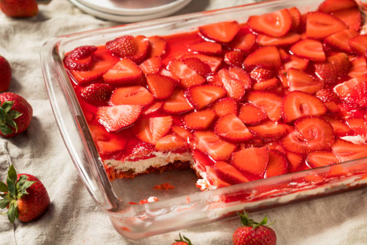

Strawberry and Pretzel Salad

Ingredients
- 1 1/2 cups crushed pretzels
- 3/4 cup butter
- 4 1/2 tbsp white sugar
- 8 ounces cream cheese
- 1 cup white sugar
- 2 cups boiling watter
- 6 ounes strawberry jello
- 16 ounces of frozen strawberries
Steps
- Gather ingredients, and preheat the oven to 175C
- Mix together pretzels, melted butter, and 4 1/2 tablespoons sugar in a medium bowl until well combined. Press into the bottom of a 9x13-inch dish.
- Press into the bottom of a 9x13 inch pan. Bake for 10 minutes, or until lightly toasted. Set aside to cool completely.
- In a medium bowl, beat the sugar and cream cheese until smooth.
- Fold in whipped topping and spread evenly over the cooled crust. Refrigerate until set, about 30 minutes.
- Stir together boiling water and gelatin mix in a second large bowl. Mix in frozen strawberries; stir until thawed.
- Pour over cream cheese mixture in the dish. Refrigerate until completely chilled, at least 1 hour.
- Refrigerate until completely chilled, at least 1 hour. Slice and enjoy!
Back to Home